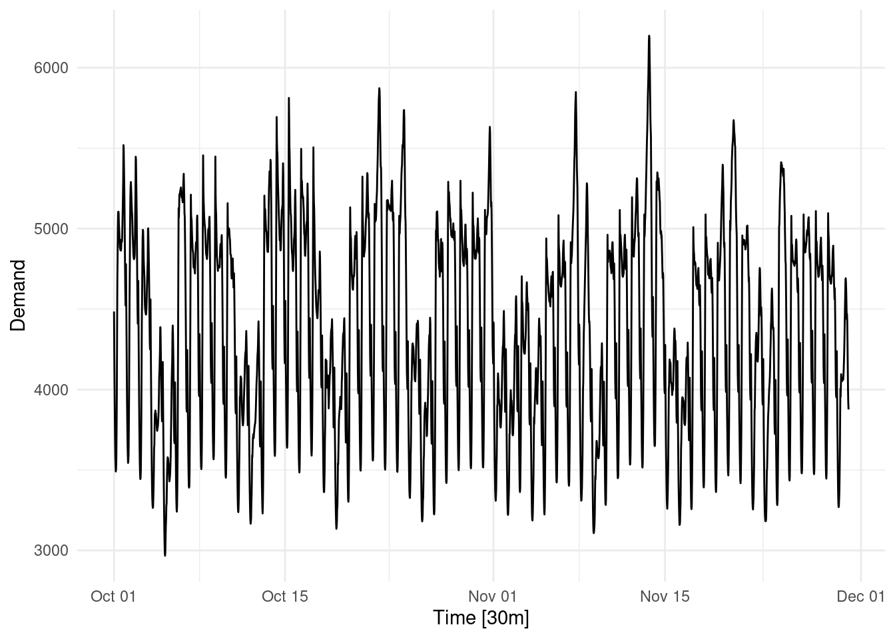
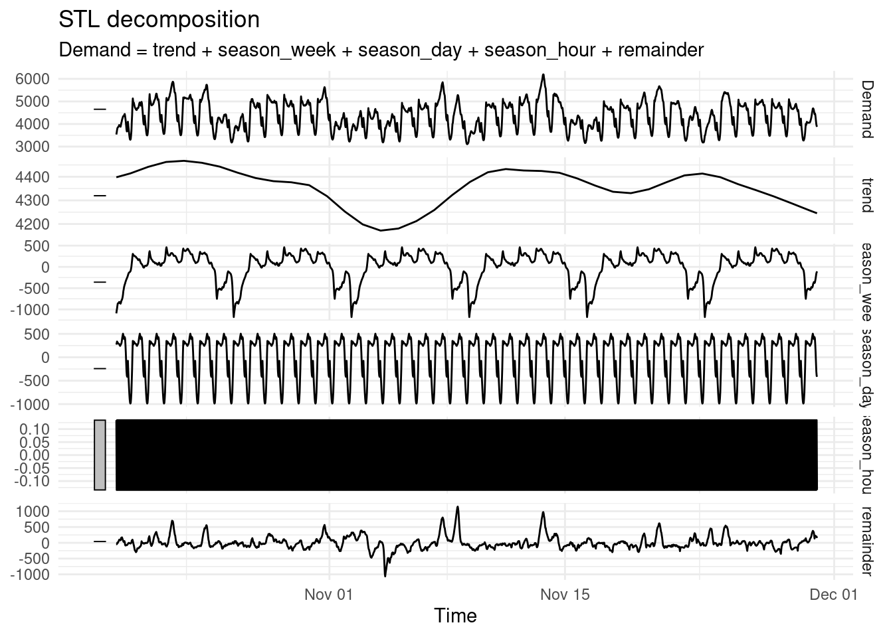
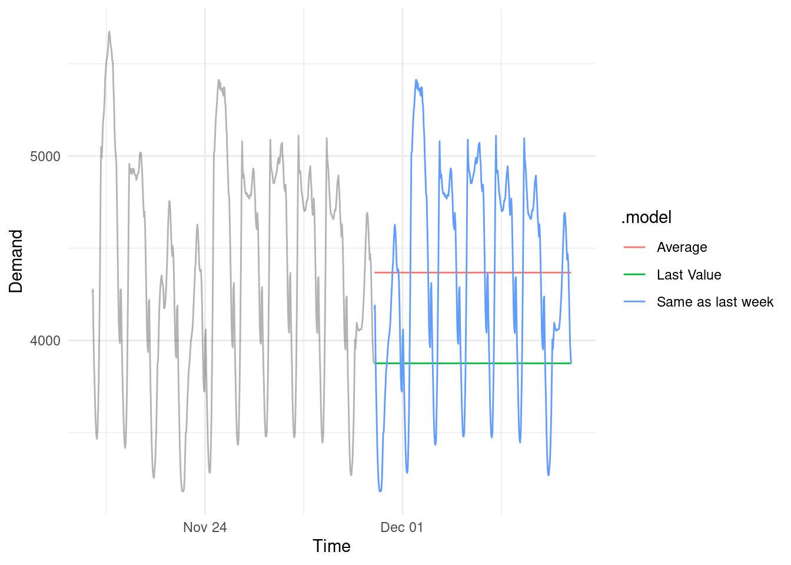
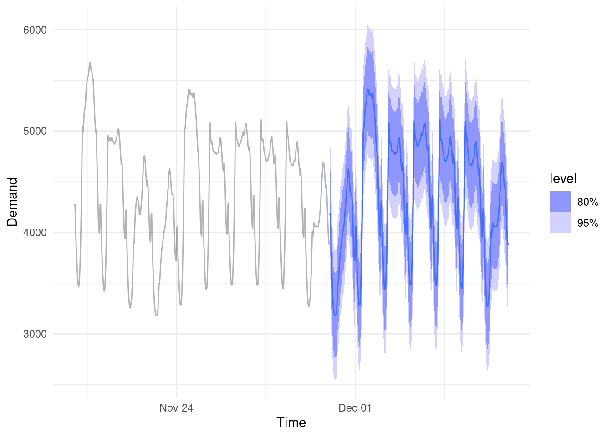
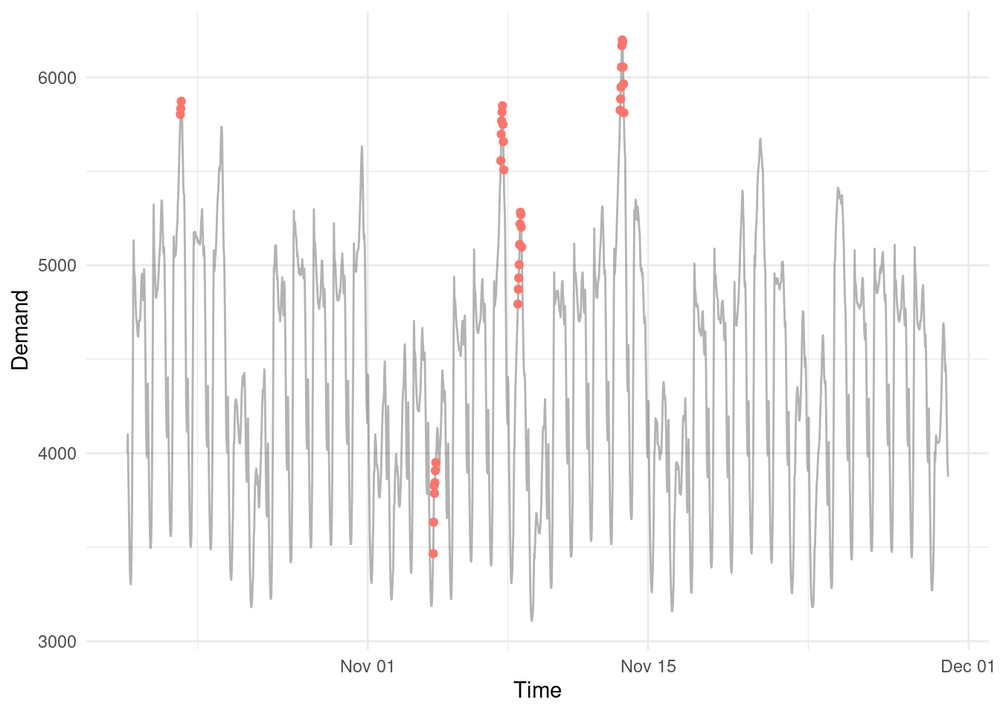

I had an interesting discussion with a client recently about the value proposition for collecting large amounts of time series data. I thought it might be worthwhile recording my thoughts here in case of interest to others.
- I want to highlight 3 key applications where time series analysis can add value.
- I want to answer three common questions I get on the topic.
What is time series data?
Time series data are data collected at specific time intervals. e.g. daily stock market prices, weekly ice cream sales, annual tourism numbers etc.
Key Applications of Time Series Data
1. Decomposition: Mathematically determining the components of a time series ‘signal’
Below we can decompose the long term trend or cyclicality, the seasonal periods (weekly, daily, hourly) and the remaining unexplained ‘noise’ so the underlying dynamics can be better understood and exploited.

2. Forecasting: Predicting future values in a range of scenarios
Forecasts can be applied in many ways. Statistical or machine learning models can generate estimates and realistic prediction intervals to forecast future values. We can layer extreme value analysis methods if the goal is worse-case rather than expected-case forecasting. Basic scenario driven forecasts can aid strategy development or sensitivity testing.


3. Anomaly Detection: Finding and investigating outliers
By understanding and decomposing the components of a time series signal we can then screen the remaining ‘noise’ for anomalous or outlying values.

FAQ
Why can’t we go with simple point estimates?
You never really know what is going to happen in the future. And no model can tell you for sure either. The only responsible course of action is to acknowledge there is uncertainty and quantify this through making a distributional forecast.
Read here for more: Level up your Forecasting Quantify uncertainty with distributional forecasts
Why can’t I just AI the shit out of this?
Time series analysis may not be as sexy as AI, but the methods behind it are robust and address fundamental properties that exist in data structured through time. It’s easy to trip over your own feet here if you aren’t careful.
Here is an example of me beating Microsoft’s AutoML system on a basic time series task: Man vs Machine Learning: I went head-to-head with Microsoft’s AutoML platform in a predictive modelling challenge.
Why bother modelling things at all?
You don’t have to. After all an entire field exists based on meaningless, post-hoc rationalisations of random fluctuations in time series data (finance).
See here: Is the share market just random noise?
References
O’Hara-Wild M, Hyndman R, Wang E, Godahewa R (2022). tsibbledata: Diverse Datasets for ‘tsibble’. https://tsibbledata.tidyverts.org/, https://github.com/tidyverts/tsibbledata/.
Want to read more? Sign up to my mailing list here for occasional emails and no spam.
Looking for a data science consultant? Feel free to get in touch here